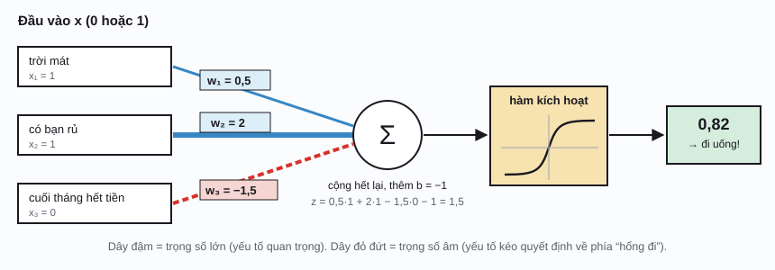
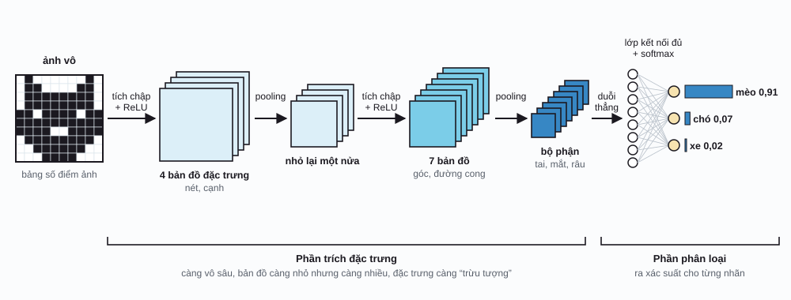
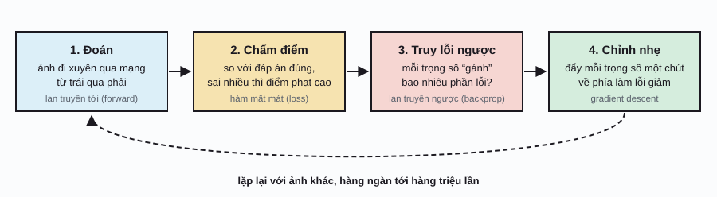

AI / Phần 1
CNN & backpropagation
Điện thoại mở khóa bằng mặt, app chụp hình đoán tên cây, máy đọc phim X-quang: phía sau đều có mạng nơ-ron tích chập (CNN). Trang này đi từ con số không: máy “thấy” tấm hình ra sao, CNN soi hình kiểu gì, và quan trọng nhất là làm sao một mạng toàn con số lại tự học được, nhờ thuật toán lan truyền ngược (backpropagation).
Máy học là gì?
Giả sử mình muốn viết chương trình nhận ra con mèo trong hình. Cách cũ là ngồi đặt luật: “có hai cái tai nhọn, có râu, mắt xếch…”. Làm thử chút là thấy bó tay: mèo nằm, mèo quay lưng, mèo đen trong bóng tối, mèo bị che một nửa. Luật nào cũng có ngoại lệ.
Máy học (machine learning) làm ngược lại: mình hổng đưa luật, mình đưa thật nhiều ví dụ có đáp án (hình này là mèo, hình kia là chó), rồi để máy tự mò ra luật. Y chang cách dạy con nít: hổng ai giảng định nghĩa con mèo cho đứa nhỏ ba tuổi, chỉ cần chỉ cho nó coi đủ nhiều con mèo.
Cái “luật” mà máy mò ra nằm trong một mô hình có rất nhiều con số chỉnh được, gọi là tham số hay trọng số (parameters, weights). Học, nói gọn, là vặn mấy con số đó cho tới khi mô hình đoán trúng. Trang này trả lời hai câu hỏi: mô hình cho hình ảnh nên có hình dạng gì (CNN), và vặn hàng triệu con số kiểu gì cho lẹ (backpropagation).
Với máy, tấm hình là một bảng số
Máy tính hổng thấy “con mèo”, nó chỉ thấy số. Một tấm hình trắng đen là một bảng ô vuông, mỗi ô là một điểm ảnh (pixel) mang một con số độ sáng: 0 là đen thui, 255 là trắng tinh (hay chia lại cho gọn thành 0 tới 1). Hình màu thì có ba bảng chồng lên nhau, cho ba màu đỏ, xanh lá, xanh dương (RGB), mỗi bảng gọi là một kênh (channel).
Một tấm hình điện thoại cỡ 1000 × 1000 điểm ảnh là 3 triệu con số. Nhiệm vụ của mô hình: nhận 3 triệu con số đó, nhả ra một câu trả lời kiểu “mèo, chắc chừng 91%”.
Neuron: cộng có trọng số rồi quyết định
Viên gạch nhỏ nhất của mạng nơ-ron là một neuron nhân tạo. Nó làm đúng ba chuyện: nhận vô mấy con số, nhân mỗi số với một trọng số rồi cộng hết lại (cộng thêm một số gọi là độ lệch (bias)), cuối cùng đưa tổng qua một hàm kích hoạt để ra kết quả.
Coi ví dụ dưới: quyết định có nên đi cà phê với bạn hông. “Có bạn rủ” được trọng số 2 (quan trọng lắm), “trời mát” chỉ 0,5, còn “cuối tháng hết tiền” trọng số âm, kéo quyết định về phía ở nhà.

x1…xn: các đầu vào; w1…wn: trọng số (mạng tự học); b: độ lệch (cũng tự học); σ: hàm kích hoạt. Hàm kích hoạt phổ biến nhất bây giờ là ReLU: số âm thì thành 0, số dương giữ nguyên, \(\mathrm{ReLU}(z) = \max(0, z)\).
Một neuron thì ngây thơ lắm. Nhưng xếp nhiều neuron thành một lớp (layer), rồi chồng nhiều lớp lên nhau (đầu ra lớp này là đầu vào lớp sau), ta được mạng nơ-ron. Chồng càng nhiều lớp thì gọi là học sâu (deep learning). Hàm kích hoạt là thứ bắt buộc: thiếu nó, chồng bao nhiêu lớp thì cũng chỉ tương đương một phép nhân cộng, hổng học được gì phức tạp.
Vậy sao hổng nối thẳng 3 triệu điểm ảnh vô một lớp neuron cho rồi? Có hai cái dở. Một là quá nhiều trọng số: lớp 1000 neuron, mỗi neuron nối với 3 triệu điểm ảnh, là 3 tỷ trọng số chỉ cho lớp đầu. Hai là mạng kiểu đó hổng biết điểm ảnh nào nằm kế bên điểm ảnh nào, trong khi nét, cạnh, hình khối đều nằm ở chỗ các điểm ảnh gần nhau. Hình con mèo dời qua phải 5 điểm ảnh là mạng phải học lại từ đầu. CNN sinh ra để giải quyết đúng hai chuyện này.
Tích chập: soi từng khúc bằng một cái khuôn nhỏ
Ý tưởng của CNN: thay vì nhìn cả tấm hình một lượt, xài một cái khuôn nhỏ xíu, thường là 3 × 3 ô, gọi là bộ lọc hay kernel. Khuôn này trượt qua từng vị trí trên hình. Ở mỗi chỗ, nhân 9 điểm ảnh bên dưới với 9 trọng số của khuôn rồi cộng lại, ra một con số. Trượt hết tấm hình, mình được một bảng số mới gọi là bản đồ đặc trưng (feature map). Phép trượt-nhân-cộng này gọi là tích chập (convolution).
Con số ra lớn khi vùng hình bên dưới giống với khuôn. Khuôn “cạnh dọc” (trái âm, phải dương) cho số lớn ở chỗ hình chuyển từ tối qua sáng theo chiều ngang, tức là chỗ có cạnh dọc. Nên mỗi bộ lọc giống như một con mắt chuyên đi tìm một kiểu hoa văn.
x: tấm hình (bảng điểm ảnh); K: bộ lọc 3×3, Ki,j là trọng số ở hàng i, cột j; zr,c: ô ở hàng r, cột c của bản đồ đặc trưng; Σ (sigma): “cộng hết lại”, ở đây cộng 9 tích; b: độ lệch. Hình 16×16 với bộ lọc 3×3 cho ra bản đồ 14×14, vì khuôn phải nằm gọn trong hình.
Tích chập tận tay
Vẽ lên ảnh, chọn bộ lọc, rê chuột lên bản đồ đặc trưngMấy chuyện nên thử trên minh họa:
- Chọn “Số 7” với bộ lọc “Cạnh ngang”: gạch ngang trên đầu số 7 sáng rực, còn nét xéo thì mờ hơn. Đổi qua “Đường chéo” thì ngược lại.
- Tắt ReLU để thấy luôn mấy số âm (màu đỏ). ReLU xóa sạch chúng, chỉ giữ chỗ nào bộ lọc “thấy” thứ nó tìm.
- Dời con mèo qua một bên (xóa rồi vẽ lại lệch đi): bản đồ đặc trưng dời theo y chang. Cùng một bộ lọc dùng cho mọi vị trí, nên con mèo ở góc nào cũng được nhận ra như nhau.
Hai cái lợi lớn
Xài chung trọng số (weight sharing): một bộ lọc 3×3 chỉ có 9 trọng số (cộng 1 độ lệch), dù tấm hình bự cỡ nào. So với 3 tỷ trọng số ở trên thì nhẹ hều.
Nhìn cục bộ (local connectivity): mỗi ô của bản đồ đặc trưng chỉ nhìn một vùng nhỏ kế nhau, đúng với bản chất của hình ảnh.
Ráp lại thành một CNN
Một CNN thật ráp mấy khối sau theo thứ tự, lặp lại vài lần:
- Lớp tích chập với nhiều bộ lọc cùng lúc (vài chục tới vài trăm), mỗi bộ lọc cho ra một bản đồ đặc trưng. Ở lớp sau, mỗi bộ lọc nhìn xuyên qua tất cả bản đồ của lớp trước, như hình màu có 3 kênh.
- ReLU sau mỗi lớp tích chập, xóa số âm.
- Pooling: gom mỗi ô 2×2 thành một ô, thường lấy số lớn nhất (max pooling). Bản đồ nhỏ đi một nửa mỗi chiều, đỡ tính toán, và mạng bớt nhạy với chuyện hình bị xê dịch chút xíu.
- Cuối cùng, “duỗi thẳng” các bản đồ thành một hàng số dài, đưa qua vài lớp kết nối đủ (fully connected) như ở phần neuron, rồi qua softmax để ra xác suất cho mỗi nhãn, cộng lại bằng 1.

Chỗ hay nhất là tầm nhìn lớn dần theo độ sâu. Một ô ở lớp 1 chỉ thấy 3×3 điểm ảnh. Nhưng một ô ở lớp 2 nhìn 3×3 ô của lớp 1, mỗi ô đó lại thấy 3×3 điểm ảnh, nên tổng cộng thấy cỡ 5×5; có thêm pooling thì vùng nhìn còn nở nhanh hơn nữa. Lớp càng sâu, đặc trưng càng to và càng “trừu tượng”. Khi người ta mở các CNN đã huấn luyện ra coi (Zeiler và Fergus, 2014), đúng là lớp đầu học được bộ lọc cạnh và màu, lớp giữa học hoa văn, lớp sâu phản ứng với mặt người, bánh xe, mõm chó.

Dạy mạng: hàm mất mát và gradient descent
Lúc mới tạo, mọi trọng số trong mạng là số ngẫu nhiên, nên mạng đoán bậy bạ. Huấn luyện là một vòng lặp bốn bước, lặp đi lặp lại với hàng ngàn tới hàng triệu tấm hình:

Chấm điểm bằng hàm mất mát
Muốn sửa thì trước hết phải đo được sai bao nhiêu. Hàm mất mát (loss function) biến “đoán sai” thành một con số: càng sai, số càng lớn; đoán trúng hoàn toàn thì bằng 0. Với bài phân loại, hàm hay xài nhất là cross-entropy: \(L = -\log p_{\text{đúng}}\), với \(p_{\text{đúng}}\) là xác suất mạng gán cho đáp án đúng. Mạng nói “mèo 91%” mà đúng là mèo thì \(L \approx 0{,}09\), nhẹ nhàng; nói “mèo 1%” thì \(L \approx 4{,}6\), bị phạt nặng.
Lăn xuống dốc
Tưởng tượng độ lỗi là độ cao của một vùng đồi núi, mỗi trọng số là một hướng đi. Mình đang đứng đâu đó, mắt bị bịt, muốn xuống thung lũng thấp nhất. Cách đơn giản nhất: rờ chân coi dốc nghiêng về phía nào, rồi bước một bước xuống phía đó. Lặp lại. Độ nghiêng đó gọi là gradient (đạo hàm), và cách đi này gọi là gradient descent.
∂L/∂w: đạo hàm riêng của độ lỗi L theo trọng số w, đọc là “L thay đổi nhanh cỡ nào khi nhích w một chút”; dương nghĩa là tăng w thì lỗi tăng, nên phải giảm w (vì vậy có dấu trừ). η (eta): tốc độ học (learning rate), quyết định bước dài hay ngắn. ←: gán giá trị mới.
Lăn xuống dốc
Kéo trái banh, chỉnh tốc độ học, rồi cho nó lănMinh họa chỉ có một trọng số cho dễ vẽ. Mạng thật có hàng triệu tới hàng tỷ trọng số, tức là một “vùng đồi” có hàng triệu chiều, nhưng cách đi y chang: mỗi trọng số nhích một chút theo độ dốc của riêng nó. Trong thực tế, mỗi bước người ta chỉ chấm điểm trên một nhúm nhỏ hình chọn ngẫu nhiên (gọi là mini-batch, cỡ 32 tới vài ngàn hình) thay vì cả kho, nên đường đi hơi lắc lư, gọi là SGD (stochastic gradient descent). Các biến thể như Adam tự chỉnh bước cho từng trọng số, giờ là lựa chọn mặc định.
Backpropagation: truy lỗi ngược theo dây chuyền
Bắt đầu bằng một ví dụ ngoài chợ. Giả sử xăng lên 1 ngàn thì tiền chở hàng lên 2 ngàn; mà tiền chở hàng lên 1 ngàn thì tô hủ tiếu lên 0,5 ngàn. Hỏi: xăng lên 1 ngàn thì tô hủ tiếu lên bao nhiêu? Dễ ợt: 2 × 0,5 = 1 ngàn. Mình chỉ việc nhân các tỉ lệ dọc theo dây chuyền. Trong toán, đó là quy tắc dây chuyền (chain rule) của đạo hàm.
Mạng nơ-ron là một dây chuyền dài: đầu vào đi qua lớp này tới lớp kia, cuối cùng thành độ lỗi L. Muốn biết L đổi bao nhiêu khi nhích một trọng số nằm sâu bên trong, mình nhân các tỉ lệ dọc đường đi từ trọng số đó tới L. Mẹo của backprop là đi ngược từ cuối về đầu: tính độ dốc ở lớp cuối trước, rồi xài lại kết quả đó cho lớp kế trước, cứ vậy lùi dần. Mỗi lớp chỉ cần biết “lỗi đổ về tới mình là bao nhiêu” và phép tính cục bộ của chính nó. Nhờ xài lại, cả triệu gradient được tính trong một lượt đi ngược.
Cho mạng tí hon trong minh họa dưới: \(z = w_1x + b_1\), \(h = \mathrm{ReLU}(z)\), \(\hat y = w_2h + b_2\), \(L = (\hat y - t)^2\). ŷ (y mũ): giá trị mạng đoán; t: đáp án đúng. Mỗi phân số là một “tỉ lệ” cục bộ, dễ tính: \(\partial L/\partial \hat y = 2(\hat y - t)\), \(\partial \hat y/\partial h = w_2\), \(\partial h/\partial z\) bằng 1 nếu z dương và 0 nếu z âm, \(\partial z/\partial w_1 = x\).
Lan truyền ngược từng bước
Chạy tới, lan ngược, cập nhật, lặp lạiNhững điều có thể kiểm tra trên minh họa:
- Gradient của một trọng số luôn bằng “lỗi đổ về tới chỗ nó” nhân với “cái mà trọng số đó đã nhân vô”. Ví dụ ∂L/∂w2 = ∂L/∂ŷ · h. Nên đầu vào bằng 0 thì trọng số đi kèm hổng bị sửa: nó đâu có góp phần gì vô lỗi.
- Kéo x về số âm để z âm: ReLU chặn, gradient về w1, b1 bằng 0. Neuron nào lúc nào cũng ra 0 thì hổng học được nữa, gọi là neuron chết.
- Bấm “Huấn luyện 20 vòng” vài lần: độ lỗi giảm dần về gần 0. Tăng tốc độ học lên 0,3 để thấy nó nhảy loạn, y như trái banh ở trên.
Backprop trong CNN
CNN cũng chỉ là một dây chuyền phép tính, nên backprop chạy y chang. Chỉ có vài khúc đặc biệt:
- Lớp tích chập. Một trọng số của bộ lọc được xài ở mọi vị trí trên hình, nên nó “gánh” lỗi ở mọi vị trí. Gradient của nó là tổng đóng góp ở tất cả các vị trí (công thức dưới). Vì vậy một bộ lọc học được từ cả tấm hình, chứ hổng phải từ một góc.
- ReLU. Chỗ nào đầu vào dương thì cho lỗi đi qua nguyên vẹn, chỗ nào âm thì chặn lại (nhân 0).
- Max pooling. Trong mỗi ô 2×2, chỉ ô thắng (số lớn nhất) được nhận lỗi; ba ô kia nhận 0, vì nhích chúng chút xíu cũng hổng làm đầu ra đổi.
Đọc là: muốn biết trọng số Ki,j nên chỉnh cỡ nào, đi qua mọi vị trí (r, c) mà bộ lọc từng đứng, lấy “lỗi ở ô kết quả đó” nhân với “điểm ảnh mà Ki,j đã nhân vô ở vị trí đó”, rồi cộng hết lại. Đúng y quy luật “lỗi đổ về × cái đã nhân vô” ở trên.
Minh họa dưới đây cho thấy trọn vẹn chuyện “bộ lọc là trọng số học được”. Có một bộ lọc đáp án giấu kín. Mạng chỉ được coi tấm hình và bản đồ đặc trưng mà bộ lọc đáp án tạo ra. Bộ lọc của mạng bắt đầu bằng 9 số ngẫu nhiên, và chỉ nhờ công thức trên cộng với gradient descent, nó tự mò về đúng bộ lọc đáp án.
Bộ lọc tự học
Backprop tìm lại 9 trọng số của bộ lọc đáp ánTrong một CNN thật, chẳng có bộ lọc đáp án nào cả: “mục tiêu” chỉ là nhãn mèo hay chó ở cuối mạng, và lỗi được lan ngược qua hàng chục lớp để chỉnh hàng triệu trọng số cùng lúc. Bộ lọc tìm cạnh tự xuất hiện ở lớp đầu vì nó có ích cho việc đoán đúng nhãn.
Mấy cái khó và cách gỡ
| Chuyện gì | Nói đơn giản | Cách gỡ phổ biến |
|---|---|---|
| Gradient biến mấtvanishing gradient | Lan ngược qua nhiều lớp là nhân nhiều tỉ lệ. Tỉ lệ nhỏ hơn 1 nhân hoài thì gần bằng 0, lớp đầu gần như hổng học được. | ReLU thay cho hàm chữ S; khởi tạo trọng số khéo; chuẩn hóa theo lô (batch norm); kết nối tắt kiểu ResNet. |
| Kết nối tắtskip connection | Cho đầu vào của một khối “đi tắt” cộng thẳng vô đầu ra. Lỗi có đường cao tốc chạy ngược về lớp đầu. | ResNet (2015) nhờ vậy mà huấn luyện được mạng 152 lớp. Transformer ở Phần 2 cũng xài y chang. |
| Học vẹtoverfitting | Mạng thuộc lòng hình huấn luyện, gặp hình mới thì đoán sai. Giống học sinh thuộc đáp án đề cũ. | Thêm dữ liệu; tăng cường dữ liệu (data augmentation): lật, xoay, cắt, đổi màu hình; dropout; dừng sớm. |
| Tốc độ học khó chọn | Nhỏ quá thì học hoài hổng xong; lớn quá thì nhảy loạn, nổ tung. | Adam; khởi động nhẹ rồi giảm dần tốc độ học theo lịch (warmup, cosine schedule). |
| Hộp đen | Mạng đoán đúng nhưng khó giải thích vì sao. | Vẽ bản đồ nhiệt coi mạng nhìn chỗ nào (Grad-CAM, cũng dựa trên gradient); trực quan hóa bộ lọc. |
Từ điển nhỏ
| Thuật ngữ | Tiếng Anh | Nói đơn giản |
|---|---|---|
| Trọng số, tham số | weight, parameter | Mấy con số mà mạng tự vặn trong lúc học. |
| Hàm kích hoạt | activation function | Biến đổi phi tuyến sau mỗi phép cộng có trọng số; phổ biến nhất là ReLU. |
| Bộ lọc, kernel | filter, kernel | Cái khuôn nhỏ trượt qua hình để tìm một kiểu hoa văn. |
| Bản đồ đặc trưng | feature map | Kết quả của một bộ lọc: chỗ nào có hoa văn đó thì số lớn. |
| Pooling | pooling | Gom ô 2×2 thành 1 ô để thu nhỏ bản đồ. |
| Hàm mất mát | loss function | Con số đo mạng đoán sai cỡ nào. |
| Gradient | gradient | Độ dốc của độ lỗi theo từng trọng số: chỉnh hướng nào, mạnh cỡ nào. |
| Tốc độ học | learning rate | Bước dài hay ngắn mỗi lần chỉnh trọng số. |
| Lan truyền tới / ngược | forward / backward pass | Chạy hình xuyên qua mạng để đoán / chạy lỗi ngược về để tính gradient. |
| Epoch | epoch | Một lượt mạng đi qua hết kho dữ liệu huấn luyện. |
Phụ lục: ký hiệu toán học
Ký hiệu toán học trên trang này. Cột giữa là cách đọc trong tài liệu tiếng Anh.
| Ký hiệu | Đọc (tiếng Anh) | Ý nghĩa, nói đơn giản |
|---|---|---|
| \(\sum\) | sum | Cộng hết các số hạng lại. |
| \(\sigma\) | sigma | Ở trang này: hàm kích hoạt nói chung. |
| \(\max(0, z)\) | max of zero and z | Lấy số lớn hơn giữa 0 và z; chính là ReLU. |
| \(\hat y\) | y hat | Giá trị mạng đoán (dấu mũ = “ước lượng”). |
| \(\frac{\partial L}{\partial w}\) | partial L partial w | Đạo hàm riêng: L đổi bao nhiêu khi nhích w một chút, các thứ khác giữ nguyên. |
| \(\eta\) | eta | Tốc độ học. |
| \(\leftarrow\) | is assigned, gets | Gán giá trị mới (cập nhật biến). |
| \(K_{i,j}\) | K sub i j | Phần tử hàng i, cột j của bộ lọc K. |
| \(\log\) | log | Logarit tự nhiên; −log p lớn khi p nhỏ. |
Lịch sử
- 1958
Perceptron
Frank Rosenblatt chế ra perceptron, một neuron nhân tạo học được bằng cách tự chỉnh trọng số. Báo chí hồi đó đồn rằng máy sắp biết đi, biết nói.
- 1959–62
Hubel và Wiesel
Thí nghiệm trên vỏ não thị giác của mèo cho thấy có tế bào chỉ phản ứng với cạnh theo một hướng nhất định, trong một vùng nhỏ. Ý tưởng “nhìn cục bộ, tìm cạnh trước” của CNN bắt nguồn từ đây. Hai ông nhận giải Nobel Y học năm 1981.
- 1970
Vi phân tự động chế độ ngược
Seppo Linnainmaa mô tả cách tính đạo hàm bằng cách đi ngược qua chuỗi phép tính, chính là phần toán cốt lõi của backpropagation.
- 1980
Neocognitron
Kunihiko Fukushima xây mạng nhiều lớp xen kẽ lớp tìm đặc trưng và lớp gom, tổ tiên trực tiếp của CNN, nhưng chưa huấn luyện bằng gradient.
- 1986
Backpropagation nổi tiếng
Rumelhart, Hinton và Williams đăng bài trên Nature cho thấy backprop giúp mạng nhiều lớp tự học được cách biểu diễn hữu ích bên trong.
- 1989–98
LeNet
Yann LeCun huấn luyện CNN bằng backprop để đọc mã bưu điện viết tay, rồi LeNet-5 (1998) được xài để đọc séc ngân hàng ở Mỹ. Bộ dữ liệu chữ số viết tay MNIST ra đời cùng lúc.
- 2012
AlexNet
Krizhevsky, Sutskever và Hinton thắng cuộc thi ImageNet (1,2 triệu hình, 1000 loại) với tỉ lệ lỗi top-5 là 15,3%, trong khi hạng nhì 26,2%. Huấn luyện trên hai card đồ họa GPU. Cột mốc mở màn thời đại học sâu.
- 2014–15
VGG, GoogLeNet, ResNet
Mạng sâu dần: 19 lớp, 22 lớp, rồi ResNet 152 lớp nhờ kết nối tắt, lỗi top-5 còn 3,57% trên ImageNet.
- 2018
Giải Turing
Hinton, LeCun và Bengio nhận giải Turing, “Nobel của ngành máy tính”, cho các đóng góp nền tảng về học sâu.
- 2022
ConvNeXt
Sau khi Vision Transformer nổi lên, Liu và cộng sự hiện đại hóa CNN và cho thấy CNN được thiết kế kỹ vẫn ngang ngửa. Tới nay CNN vẫn rất phổ biến trên điện thoại, camera và thiết bị y tế vì nhẹ và lẹ.
- 2024
Nobel Vật lý
John Hopfield và Geoffrey Hinton nhận giải Nobel Vật lý cho các phát minh nền tảng giúp mạng nơ-ron nhân tạo học được.
Tài liệu tham khảo
- D. E. Rumelhart, G. E. Hinton, R. J. Williams, “Learning representations by back-propagating errors”, Nature 323, 533–536, 1986.
- Y. LeCun, L. Bottou, Y. Bengio, P. Haffner, “Gradient-Based Learning Applied to Document Recognition”, Proceedings of the IEEE, 1998.
- A. Krizhevsky, I. Sutskever, G. E. Hinton, “ImageNet Classification with Deep Convolutional Neural Networks”, NeurIPS 2012.
- M. D. Zeiler, R. Fergus, “Visualizing and Understanding Convolutional Networks”, ECCV 2014. arXiv:1311.2901.
- K. He, X. Zhang, S. Ren, J. Sun, “Deep Residual Learning for Image Recognition”, CVPR 2016. arXiv:1512.03385.
- Z. J. Wang et al., “CNN Explainer: Learning Convolutional Neural Networks with Interactive Visualization”, IEEE TVCG 2020. Bản chạy trực tuyến, arXiv:2004.15004.
- Stanford CS231n, ghi chú bài giảng về CNN và về backpropagation.
- 3Blue1Brown, loạt video về mạng nơ-ron (giải thích backprop bằng hình rất dễ hiểu).